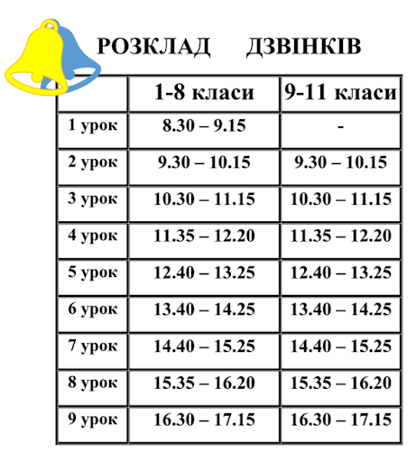

Я, Загорецька Людмила Степанівна, народилася 23 лютого 1989 року
в мальовничому селі Диканського району Водяна Балка.
Закінчила Полтавський Національний Педагогічний Університет ім. В.Г.Короленка
у 2011 році за спеціальністю "Фізика".
3 2011 року працюю у Водянобалківській ЗОШ І – ІІІ ступенів вчителем фізики
та педагогом організатором.
Методика викладання фізики є прикладною педагогічною наукою,
яка має забезпечувати високу ефективність навчального процесу.
Одним з основних принципів викладання фізики є широке і
всебічне використання навчального експерименту.

Головні досягнення з фізики:
1)Бозон Хіггса
2)Редагування ДНК методом CRISPR
3)Гравітаційні хвилі
4)AlphaGo
2)Редагування ДНК методом CRISPR
3)Гравітаційні хвилі
4)AlphaGo